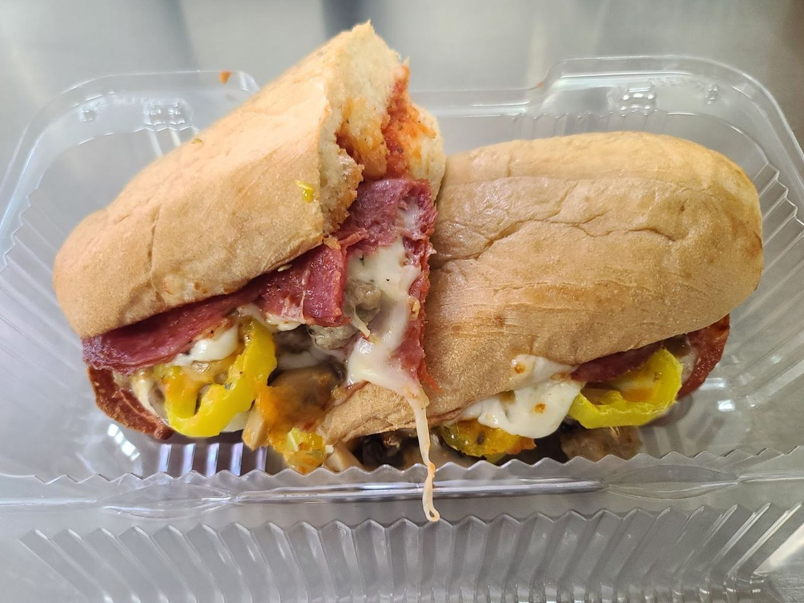

The menu

Fresh corndogs & more
Hand-battered corndogs, hot dogs, baked potatoes and sandwiches. “The price on feeding a family is just about the same” as fast food.
1. The long dog“They take a regular extra-long hotdog”…
2. Battered in-house…“and batter it themselves”…
3. Fried while you watch…“delivering a fried little piece of heaven.”
4. Eat at the picnic tablesGrab a table on the patio out front.